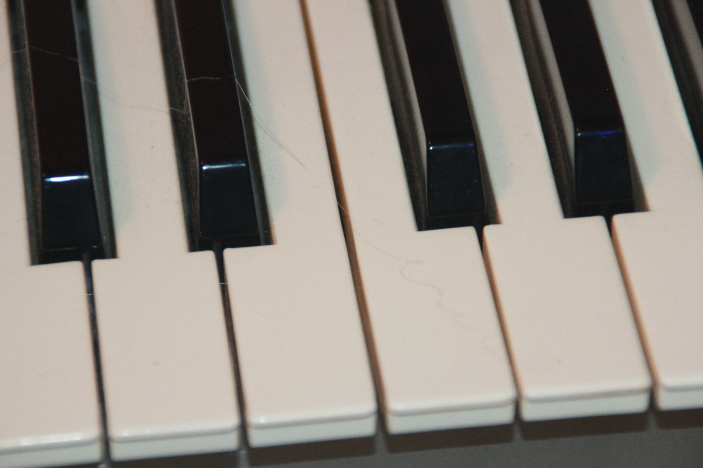
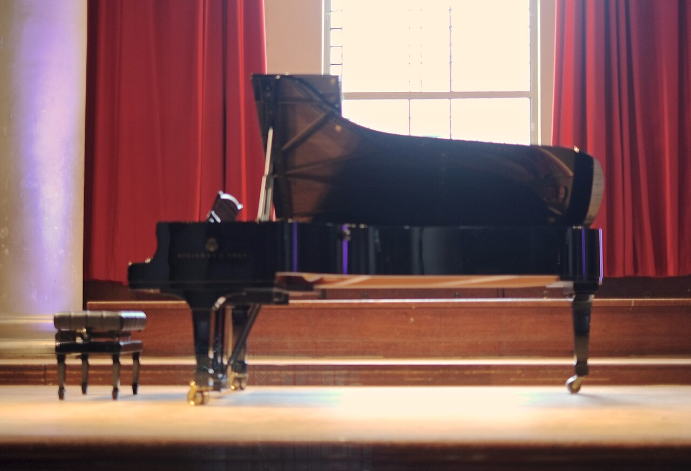
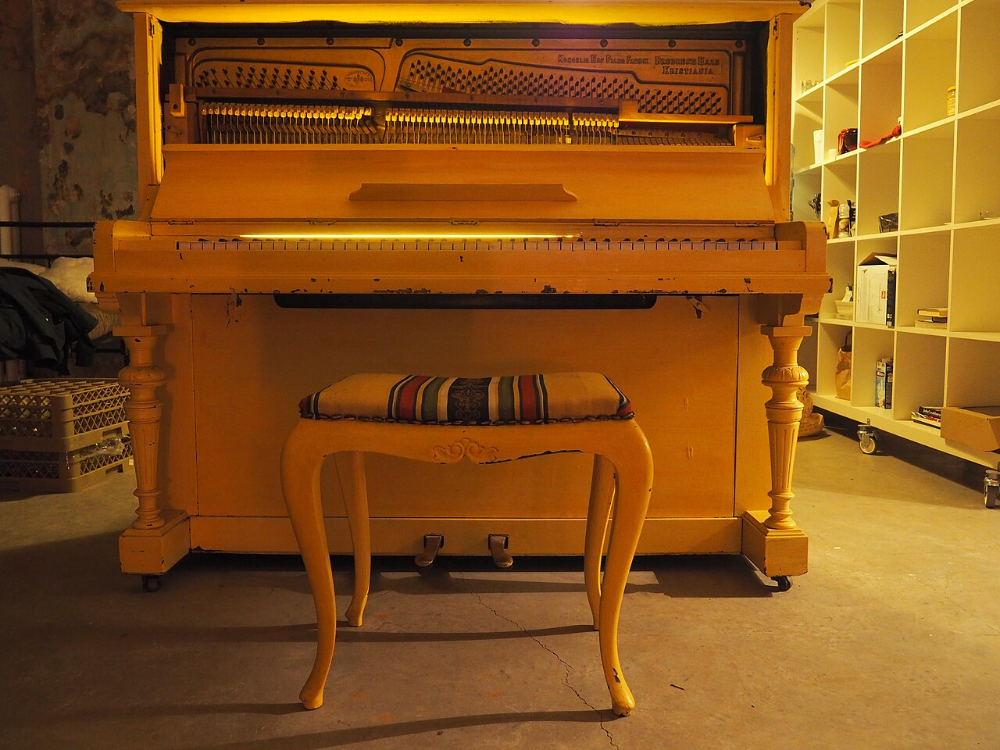
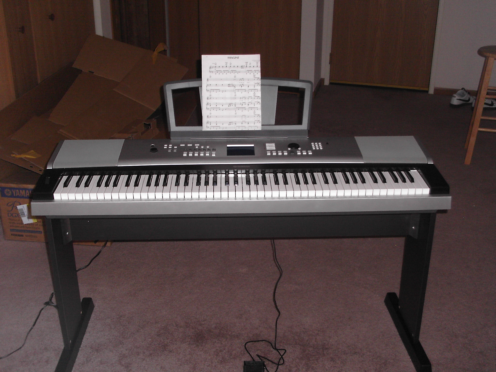

Klawiaturabiałe i czarne klawisze

Fortepianinstrument koncertowy

Pianino pionowedomowy instrument akustyczny

Pianino cyfroweklawiatura ważona, słuchawki
Ułożenie dłonizaokrąglone palce, luźny nadgarstek

Nutyzapis muzyczny na pięciolinii
▶🎹01 — Podstawy: instrument i dłoniestrona →
Budowa instrumentu, klawiatura 88 klawiszy, oktawy, postawa przy pianinie, ułożenie ręki i numeracja palców.
📄
⬛
✋
🪑
🎵
Pełna strona: Podstawy gry
Schemat klawiatury SVG, postawa, ułożenie dłoni, pierwsze dźwięki
🎹 01-podstawy.htmlKlawiatura 88 klawiszy
52 białe + 36 czarnych, oktawy, grupy 2 i 3 czarnych klawiszy, jak znaleźć C
Numeracja palców 1–5
Kciuk = 1, mały palec = 5; ta sama numeracja w obu rękach
Postawa i ułożenie dłoni
Wysokość ławy, łokcie na wysokości klawiatury, zaokrąglone palce, luźny nadgarstek
Pierwsza sekwencja — pozycja C
Pozycja pięciopalcowa C, palcowanie 1-2-3-4-5, pierwsza melodia (Oda do radości)
▶🎼02 — Notacja muzyczna (nuty)strona →
Pięciolinia, klucz wiolinowy i basowy, nazwy nut, wartości rytmiczne, pauzy, takt i metrum.
📄
🎼
🔤
⏱️
📐
♯
Pełna strona: Czytanie nut
Pięciolinia SVG, nuty na pięciolinii i pomocnicze, rytm krok po kroku
🎼 02-notacja.htmlKlucz wiolinowy i basowy
Prawa ręka (G) i lewa ręka (F), system fortepianowy (wielka pięciolinia)
Nazwy nut C-D-E-F-G-A-H
Polski (C D E F G A H) i międzynarodowy zapis, mnemotechniki
Wartości rytmiczne i pauzy
Cała, półnuta, ćwierćnuta, ósemka, szesnastka; kropka, łuk, triola
Takt i metrum (4/4, 3/4, 6/8)
Kreski taktowe, metrum, akcenty, liczenie „raz-dwa-trzy-cztery"
Krzyżyk, bemol, kasownik
Znaki chromatyczne, znaki przykluczowe, jak czytać tonację
▶🎵03 — Teoria muzyki przy pianiniestrona →
Gamy durowe i molowe, interwały, akordy (triady), tonacje, koło kwintowe, kadencje.
📄
🪜
📏
🎹
⭕
🔚
Pełna strona: Teoria w praktyce
Budowa gam, akordów i kadencji pokazana na klawiaturze + koło kwintowe SVG
🎵 03-teoria.htmlGama durowa i molowa
Wzór całe-całe-pół (C-dur), gama molowa naturalna/harmoniczna/melodyczna
Interwały
Pryma, sekunda, tercja… oktawa; wielkie/małe/czyste, brzmienie
Akordy (triady) i przewroty
Dur, moll, zmniejszony, zwiększony; akordy septymowe, przewroty
Koło kwintowe i tonacje
Znaki przykluczowe, pokrewieństwo tonacji, tonacje równoległe (dur/moll)
Kadencje T-S-D (akompaniament)
Funkcje toniki, subdominanty, dominanty; progresje I-IV-V-I do zagrania, akompaniament
▶✋04 — Technika grystrona →
Palcowanie, podkładanie kciuka, gamy i pasaże, ćwiczenia Hanon i Czerny, artykulacja, dynamika, pedalizacja.
📄
👆
💪
🔁
🎯
🦶
Pełna strona: Technika i ćwiczenia
Palcowanie gam, ćwiczenia rozgrzewające, artykulacja, plan ćwiczeń
✋ 04-technika.htmlPalcowanie i podkładanie kciuka
Standardowe palcowanie gam, podkładanie kciuka (1-2-3-1-2-3-4-5)
Hanon, Czerny, Burgmüller
Wirtuoz pianista (Hanon), etiudy Czernego — niezależność palców, równość
Przykładowe sekwencje ćwiczeń
Pasaż pięciopalcowy, gama C-dur z podkładaniem kciuka, arpeggio, bas Albertiego
Legato, staccato, dynamika
Sposoby uderzenia, łączenie dźwięków, piano–forte, frazowanie
Pedalizacja
Pedał prawy (sustain), pedał syntetyzujący po zmianie harmonii, una corda
▶📚05 — Kursy i metody naukistrona →
Popularne szkoły gry (Alfred, Faber, Bastien, Thompson, Suzuki), polskie podręczniki, plan nauki dla początkujących.
📄
📖
🎻
🇵🇱
🗓️
Pełna strona: Kursy i plan nauki
Porównanie metod, plan tygodniowy, samodzielnie vs nauczyciel
📚 05-kursy.htmlMetody: Alfred, Faber, Bastien, Thompson
Najpopularniejsze serie podręczników, dla kogo która, kolejność tomów
Metoda Suzuki
Nauka ze słuchu, rola rodzica, dla najmłodszych
Polskie podręczniki i szkoły muzyczne
Szkoły muzyczne I stopnia, podręczniki krajowe, egzaminy
Plan nauki dla początkującego
Pierwsze 6 miesięcy, ile ćwiczyć, jak ustalać cele, kamienie milowe
▶🎶06 — Repertuar wg poziomówstrona →
Utwory od pierwszych melodii po klasykę — uporządkowane według trudności, z linkami do darmowych nut.
📄
🌱
🎹
🌿
🌳
Pełna strona: Repertuar i nuty
Lista utworów wg poziomów, gdzie szukać darmowych nut (IMSLP, MuseScore)
🎶 06-repertuar.htmlPoczątkujący
Oda do radości, Wlazł kotek, Panie Janie, pierwsze melodie jedną ręką
Przykładowe sekwencje — zagraj od ręki
Oda do radości, Jingle Bells, Mary Had a Little Lamb, Panie Janie — dźwięk po dźwięku z palcowaniem
Średnio zaawansowany
Bach — Menuet G-dur, Beethoven — Dla Elizy (część), Burgmüller etiudy
Zaawansowany
Chopin — preludia/walce, Bach — inwencje, Debussy — Clair de lune
▶🎧07 — Kształcenie słuchu i rytm4 tematy
Solfeż, praca z metronomem, czytanie a vista, rozpoznawanie interwałów i akordów ze słuchu.
🎵
Solfeż i śpiewanie nut
Do-re-mi (solmizacja), nazywanie i śpiewanie dźwięków, słuch względny
🥁
Metronom — praca z pulsem
Tempo w BPM, ćwiczenie wolno→szybko, równość, podział na ósemki/szesnastki
👀
Czytanie a vista (z listka)
Granie nieznanych nut na bieżąco — patrz do przodu, nie zatrzymuj się
👂
Interwały i akordy ze słuchu
Rozpoznawanie po piosenkach-skojarzeniach, dur vs moll, granie ze słuchu
▶🎛08 — Dobór instrumentustrona →
Pianino akustyczne vs cyfrowe vs keyboard, klawiatura ważona i młoteczkowa, marki, na co zwrócić uwagę przy zakupie.
📄
🎹
🔌
🏷️
🛒
Pełna strona: Jaki instrument wybrać
Akustyczne vs cyfrowe, klawiatura ważona, marki, budżety, akcesoria
🎛 08-sprzet.htmlAkustyczne: pianino vs fortepian
Mechanizm młoteczkowy, strojenie, wymagania, brzmienie, cena
Cyfrowe i keyboardy
88 klawiszy ważonych, młoteczkowa akcja, słuchawki, MIDI/USB, brak strojenia
Marki i modele (2026)
Yamaha, Roland, Kawai, Casio — modele dla początkujących i zaawansowanych
Na co zwrócić uwagę przy zakupie
Klawiatura ważona (a nie sprężynowa!), 88 klawiszy, polifonia, używane vs nowe
▶📱09 — Aplikacje i zasoby online6 zasobów
Aplikacje do nauki, darmowe nuty, kanały i narzędzia wspierające ćwiczenie.
🎮
Synthesia
Nauka „spadającymi kafelkami", podłączenie pianina przez MIDI, biblioteka utworów
📲
Simply Piano / flowkey / Piano Marvel
Kursy krok po kroku ze słuchaniem grania przez mikrofon, feedback w czasie rzeczywistym
🥁
Metronom online / aplikacja
Podstawowe narzędzie do ćwiczenia tempa i równości
▶️
Kanały YouTube
Tutoriale utworów, kursy techniki, teoria — darmowa nauka wizualna